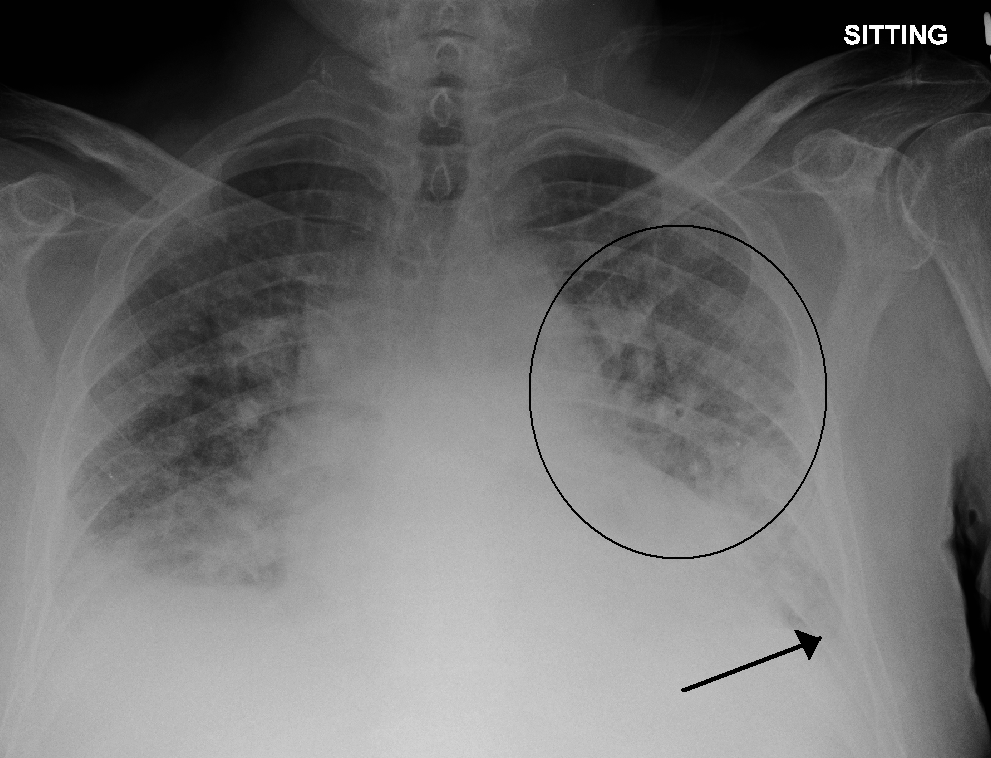

Pulmonary Edema

CAUSES
There are several possible causes of pulmonary edema.
- Congestive heart failure
- medical conditions
- External Factors
SYMPTOMS
Examples of tests used in diagnosing pulmonary edema include:
- complete blood count
-
echocardiogram, or an ultrasound, to check for abnormal heart activity
-
chest X-ray to see fluid
-
blood tests to check oxygen levels
-
electrocardiogram (ECG) to look for heart rhythm problems or signs of a heart attack
-
fatigue
DIAGNOSIS
Your healthcare provider will do a physical examination and take a medical history. They may ask if you have had a cold recently, how long your cough has lasted, and if you produce mucus when you cough. In addition, they may order a chest X-ray, tests for viruses in your upper respiratory secretions or blood tests.
TREATMENTS
Depending on your condition and the cause of your pulmonary edema, your doctor may also give:
- Preload reducers. These help decrease pressures from the fluid going into your heart and lungs. Diuretics also help reduce this pressure by making you urinate, which eliminates fluid.
-
Afterload reducers. These medications dilate your blood vessels and take pressure off your heart.
-
Heart medications. These will control your pulse, reduce high blood pressure, and relieve pressure in arteries and veins.
-
Morphine. This narcotic is used to relieve anxiety and shortness of breath. But fewer doctors today use morphine due to the risks.